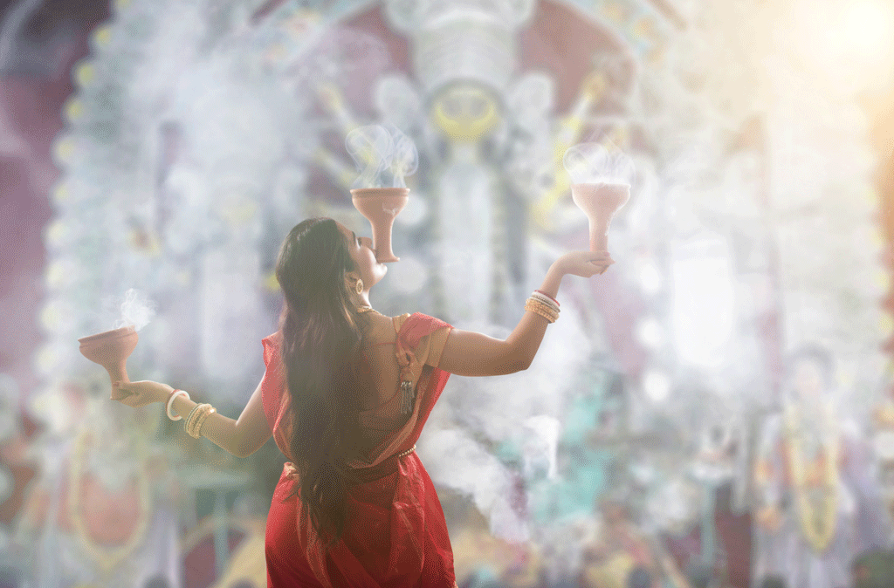
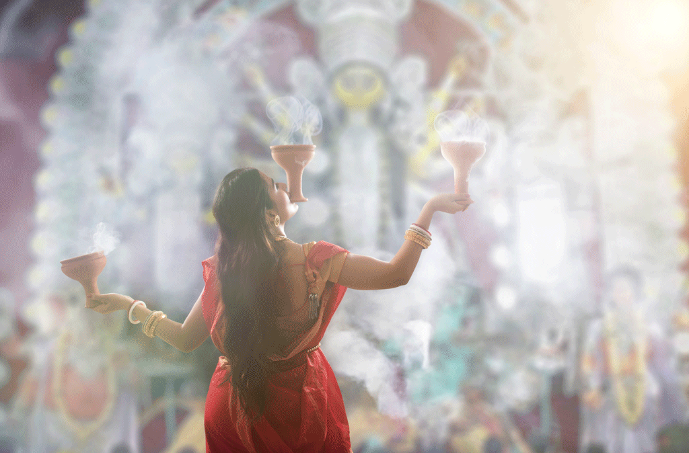

Dhunachi is a Bengali incense burner (commonly used in conjunction with Indian Frankincense or "Dhuno" for traditional ceremonies) used for one of the stages during aarti, or ritualized dance worship. It is often used following the arati with the pradip (a lamp with an odd number of wicks).
The dhunachi has a flared shape and is held by a stem with a large cavity at the top, and is traditionally made of earthenware. When made of brass or silver, it needs a longer handle because of the heat. It is lit by placing burning coal at the bottom, which ignites a layer of slow-burning coconut husk, on which incense (usually resin like Indian Frankincense or "Dhuno" is sprinkled.
During the Durga puja in eastern India, it is common to have dhunuchi nritya, or a frenzied dance with the censer, to the accompaniment of feverish dhak rolls. Many puja traditions also organize contests for the best dance, where some performers may go with as many as three dhunuchis - the third one held between the teeth. Dhunachi arati also known as "dhoop arati".